前言
這篇是小弟我自己的學習筆記，內容不會針對 iOS 開發的特定主題進行介紹，
內容主要是看了 Developing iOS 8 Apps with Swift by Stanford 這個
課程的心得與感想，因為這塊尚在學習中，所以內容可能會有錯誤，也請大家包涵。
另外，這邊紀錄的主要是針對小弟我自己比較不熟悉的部分，所以大家
不要把這文章當作一個正式的學習過程喔！！還是建議看完整的影片學習，或是直接閱讀外面的課本、上課、或是官方的文件喔！！
最後，這篇文章會隨著小弟自己的學習過程中，不斷的更新，但更新的過程中，並不會特別 Highlight ，也請大家多見諒。
開始
根據白鬍子 ( 沒錯，裡面的講師，外號就是白鬍子～～ ) 目前 Lession 1 開始，會從頭撰寫一個計算機，所以我們這篇，
就針看看 Lession 1 裡面，從撰寫計算機的過程中，學習 iOS 開發。
建立新專案
首先，我們當然要裝上 Xcode，目前 Xcode 是免費的，可以直接從 App Store 進行下載 ( 但是要部署到手機上，就要繳年費 3000 … )，
而第一步，我們就先建立一個新的專案。
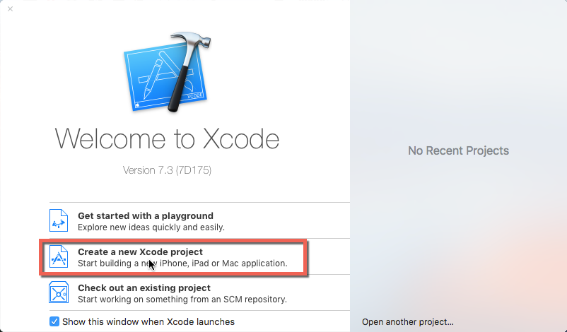
接下來，我們可以看到，這邊基本上提供了許多不同的範本，有類似 Email App 的 Master-Detail 範本，而這邊，我們先使用 Singe View Application 當作範例。
畢竟，我們現在只需要第一頁而已。
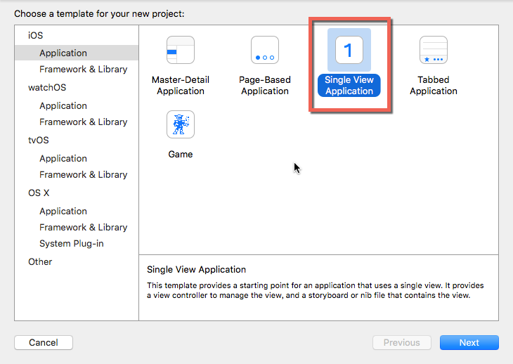
接下來，我們可以針對專案名稱進行命名，而比較特殊的是 Organization Identifier ，這個到時候上架，會變成唯一的識別，所以我們通常用倒網址的方式。
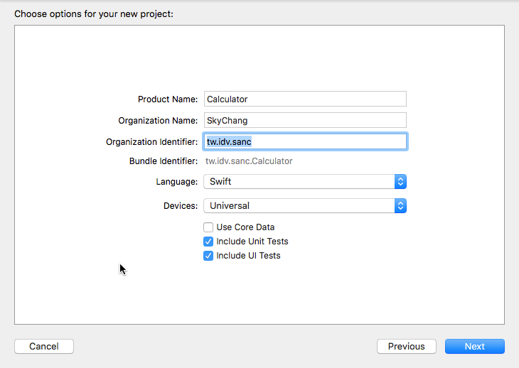
這邊就單純了，反正就選擇要存放的路徑，而目前我們還不打算使用版控，所以 Create Git Repository 就不勾選了。
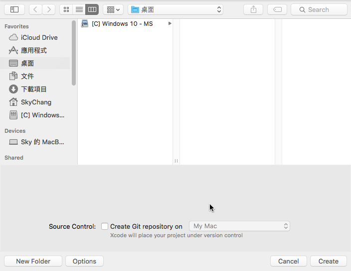
建立 UI
完成之後，我們就可以去 Main.storyboard 拉畫面， Main.storyboard 是所有畫面的起點，這點 iOS 做的其實很不錯 ( 其實 MS 也有類似的東西… )，
透過一個畫面一個畫面，就可以看到整個畫面的來龍去脈～～
而這邊，我們就拉一個 Label ， 當作計算機顯示數字的地方，並且可以設定大小為 32 ， 並且將 0 靠右對齊。
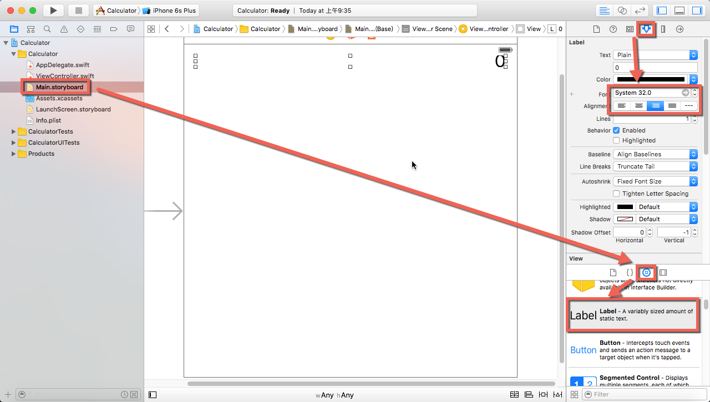
接著，我們就可以 Run Run 看，登登！！白鬍子就給我們了第一個驚喜！！沒錯，iPhone 模擬器無法看到那個 0 !!!!!
但其實如下圖，不是那個 0 被 Hidden 了，而是 iPhone 顯示不到那個 0 …
狀況就很類似下圖的情況， iPhone 的寬度不到那個 0 的位置，而且大家如果有注意到，Main.storyboard 的框框是正方形的！！
但沒有任何一個裝置是正方形的啊！！！！！ 沒錯，Main.storyboard 的 Layout 有他自己的特殊規定，
為了符合各種裝置，甚至是橫向直向的時候，都能讓 Layout 正常，所以開發上必須有特殊的做法～～
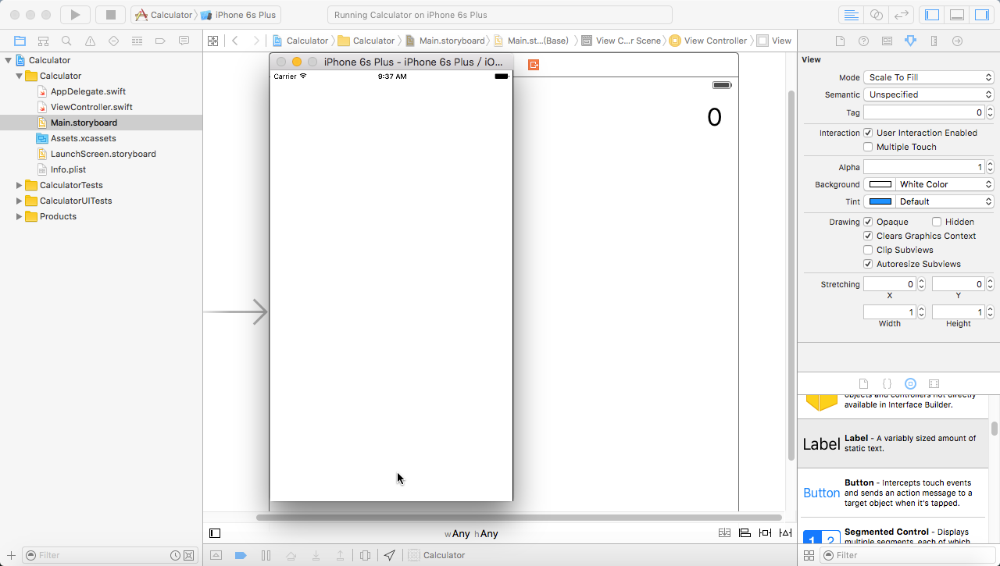
接下來，我們就要針對 Layout 進行設定，首先在 Label 上，按住 Ctrl + 滑鼠左鍵，拖拉到左邊線條。
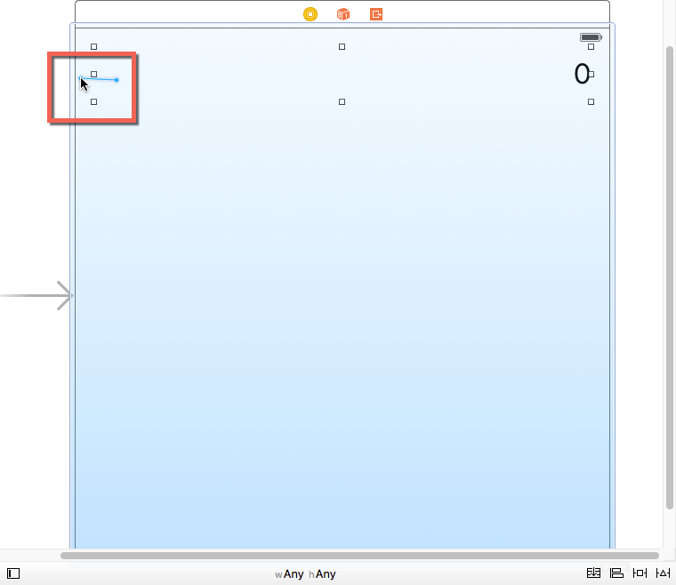
完成之後，我們就可以按下，下面的按鈕，並且從左邊的清單看到相關資訊，是低，上面那個動作，就是增加了約束 ( constraints )，
透過約束 ( Constraints ) 就可以讓 iOS 在不同的情境下，知道該怎樣去做顯示。
而底下的紅色線，就代表目前還有 右、上、下 的部分，iOS 不知道怎麼顯示。
而藍色線代表 iOS 知道他要怎麼顯示。
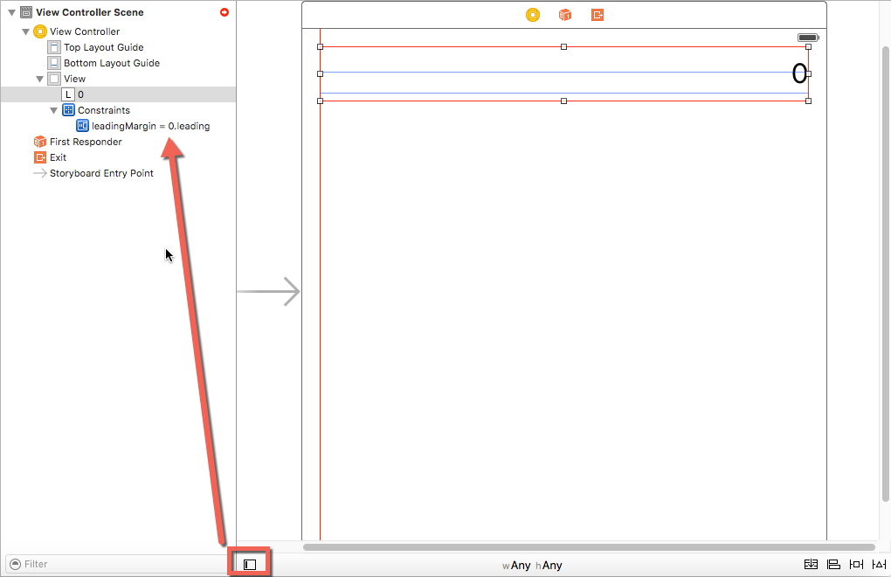
接著，完成了左邊，我們一樣要完成 右、上 ( 請先不要拖拉下方 )，當拖拉到右方的時候，就會跳出如下圖視窗，
而這邊我們就選擇 Leading Space to Container Margin。 ( 原因請容小弟未來補上.. )，而拉到上方的時候，也同樣的方式去選擇。
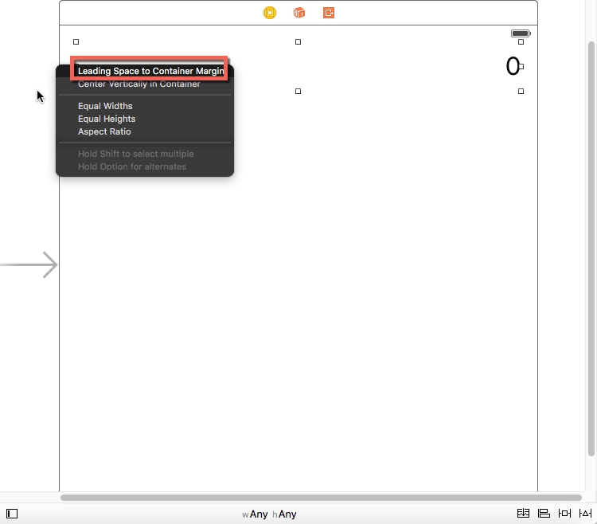
當完成之後，我們 左、上、右 都呈現藍色了，接下來，我們可以看到如下圖有個橘色的部分。
那其實是代表，Xcode 發現有問題。
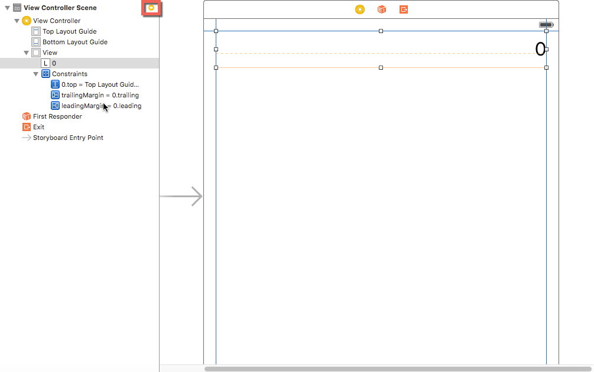
當按下去後，就會跳到下一頁，如下圖，那個三角形代表著 iOS 很貼心的提供我們解決方案。

點擊之後，我們就可以選擇 Update frames ，這樣底下就會變成藍線了 ( 未來補上是做什麼用的… )
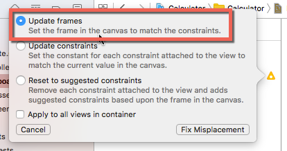
這個時候，我們重新執行，就可以看到 0 出現了！！ ( 而且旋轉模擬器也不會有問題喔！！ )
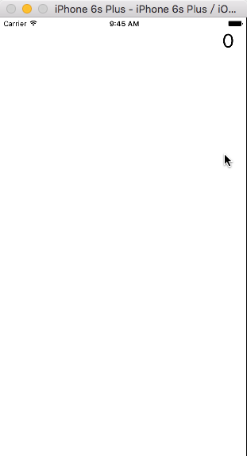
將 Label 與 Code 連結
接下來，我們一定會想，要怎樣讓 Label 與 Code 連結，其實很簡單，也很好玩，我們只要按住 Ctrl + 滑鼠左鍵，拖拉到程式碼就可以了！！
而拖拉過去放開後，會跳出視窗可以選擇，基本上，不用特別去選擇就可以。
如下圖。
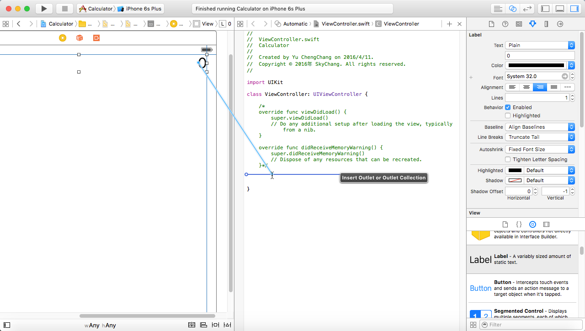
完成後的程式碼如下圖，@IBOutlet 是代表著與 UI 繫結，Weak 目前 Lession 1 還沒介紹到….
var 代表著變數，而 Display 則是變數名稱 後面 :UILabel 則是代表著型態為 UILabel
而 UILabel 這個型態後面有一個 ! ，其實這是一個語法糖，因為 Swift 有很多 optional 的型態，而所謂的 optional 說穿了，
其實這就很像 C# 的 int? 這種型態…
而基本上 Swift 定義 optional 也是用 ? ，所以原則上應該也是必須寫成如下
1 | weak var Display: UILabel? |
但如同 C# 一樣，如果是 int? 的型態，到時候要取值，在 C# 裡面就必須要用 xxx.value 來取得值，而在 Swift 裡面，要取得值，就必須要用 ! 來取值，
如下，使用 Display! 來取得 optional 裡面的 UILabel 物件。
1 | Display！.text = “123" |
等等，大家可能會發現，不對啊，上面我們看到的是 UILabel!，如下。
1 | weak var Display: UILabel! |
而 UILabel 是型別啊！！，不是真的變數啊。沒錯！！所以才說是語法糖，
當在型態後面加上 ! 的時候，就代表著 Display 這個變數，無論何時，都會保持著直接取得值的狀態，所以未來使用 Display 的時候，就不用寫 Display! 了。
1 | Display.text = “123" |
p.s 後面我的 Code 又把 Display 這個變數改成小寫 display，因為影片是小寫，所以就統一用小寫。
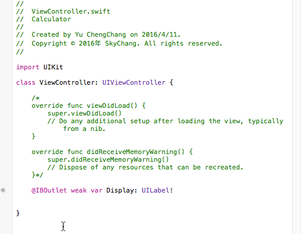
Help 方式
在 Xcode 裡面，提供了文件說明的方式，只要按住 Option ，然後就可以點選程式碼，就可以看到說明。
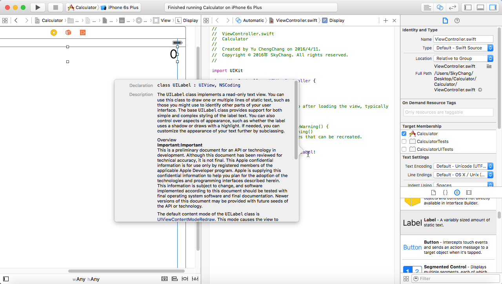
加上 Button
接著，我們就可以拉 button 進去了。
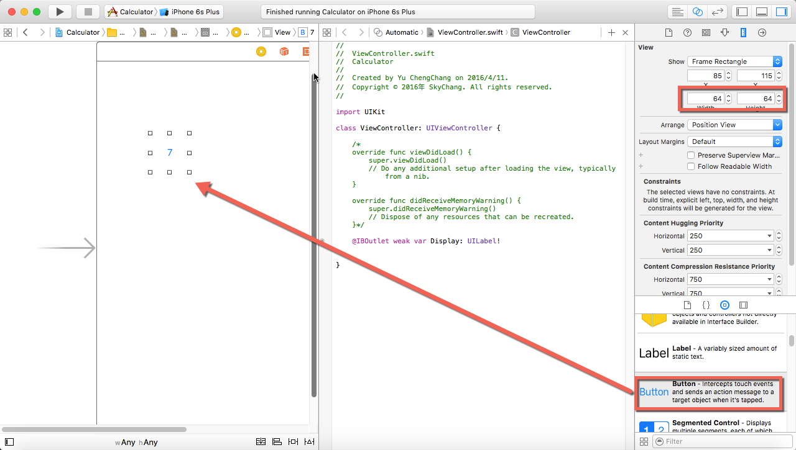
而 Button 要和 code 產生關聯，方法也是一樣，但這邊就要注意了，要選擇 Action，而不是 Outlet，而 Arguments，必須要選擇 Sender，
其實有經驗的開發人員就會知道了，Sender 就是代表著哪個按鈕按下，因為等下我們數字鍵會全部綁定這個方法，所以我們要透過 Sender 這個參數，
來得知是哪個按鈕按下。
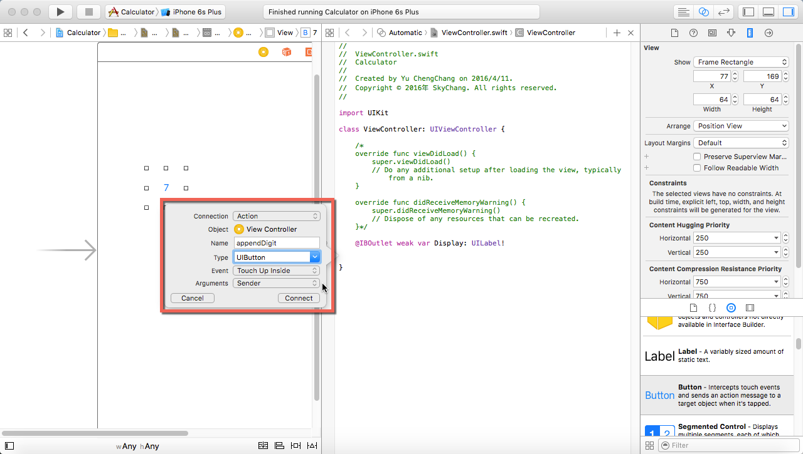
接下來，就拖拖拉拉，完成數字鍵…
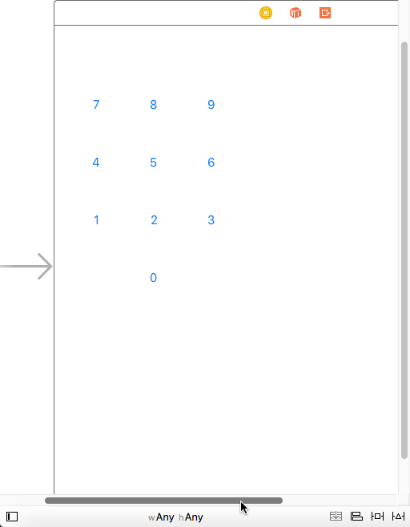
Swift Func
接下來，我們就要開始寫一些 Code，在 Swift，裡面的 func，如下：
appendDigit 是 function 的名稱，而 sender 是參數的名稱， UIButton 是參數的型態 ( 剛好和 C# , Java 顛倒，就不能統一一下嗎= = )
若有回傳值，則是加在 () 的後面，未來再提。
1 | func appendDigit(sender: UIButton){} |
而如果是從 Button 拉過來的 func ，會多 @IBAction ，這個也是代表著和 UI 繫結，所以不是 func 必備的參數，但卻是和 UI 繫結必須的。
1 | func appendDigit(sender: UIButton){} |
完整的 Class 如下，有幾個地方需要注意，首先，我們可以定義一個變數 userIsInheMiddleOfTypingANumber ，
但在 Swift 裡面，只要定義了變數，就一定要先給值，沒辦法和 C# 一樣，定義出來的東西可以先不給值。
那大家可能又會好奇，剛剛談論很久的 @IBOutlet weak var display: UILabel! 為什麼可以不用給值。
一來是因為他是 optional 型別，預設就會是 nil ( 可以想成 null )，二來是因為當我們畫面 run 起來的時候，
立馬就會與 UI 繫結起來了。
再往下看，我們可以看到 let ， 使用 let 後，這個變數就不能改了～～
而 sender.currentTitle! 則是按鈕上的數字，其實可以發現，Swift 真的是海量的 optional …. 撰寫時真的要小心～
另外，我們看到 print(“digit = (digit)”) ， 只要是 () 裡面的東西，就可以直接輸出變數內容，就不用和以前一樣字串 + + + 了。
( 最近 JS ES6 和 C# 都有類似的東西，但寫法都不一樣…翻桌 )
最後，這邊的邏輯其實很簡單，影片中，使用 userIsInheMiddleOfTypingANumber 來判斷是否第一次按下 button，
如果是的話，就直接將按鈕上的數字塞到 Lable ( 這樣才不會出現 01 , 09 , 08 這種狀況 )，而如果不是第一次，就直接往後加字串。
1 | class ViewController: UIViewController { |
完成的結果如下～～
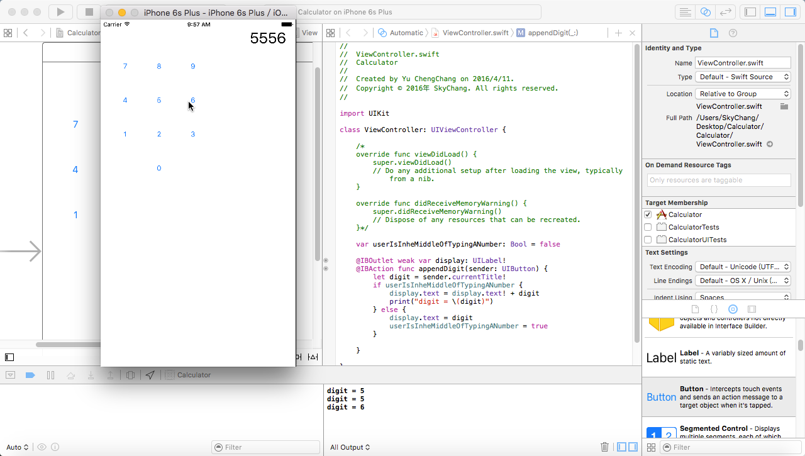
後記
基本上，這樣就完成了，其實寫了一下，Swift 真的感覺不難，也滿好玩的～～